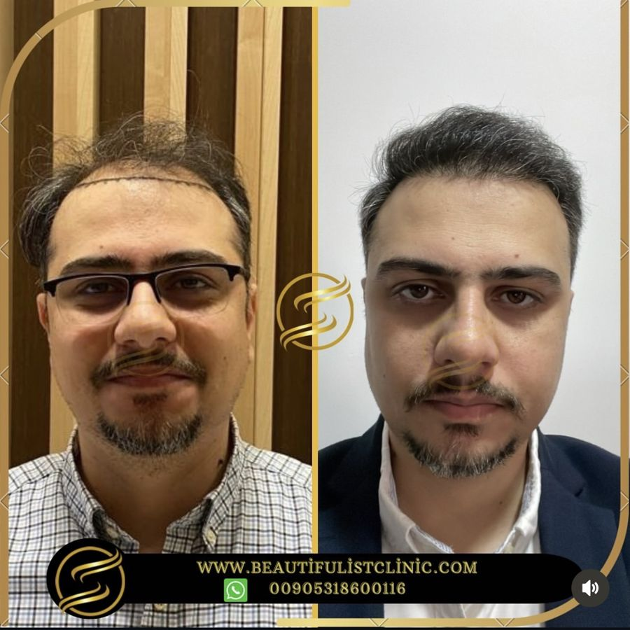
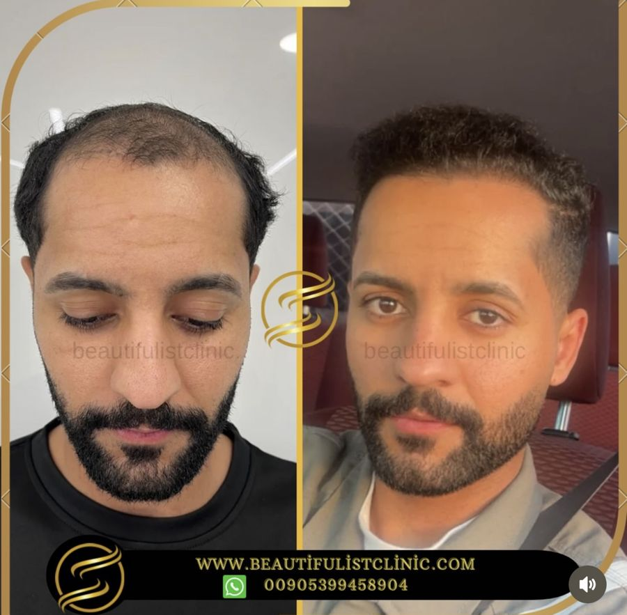
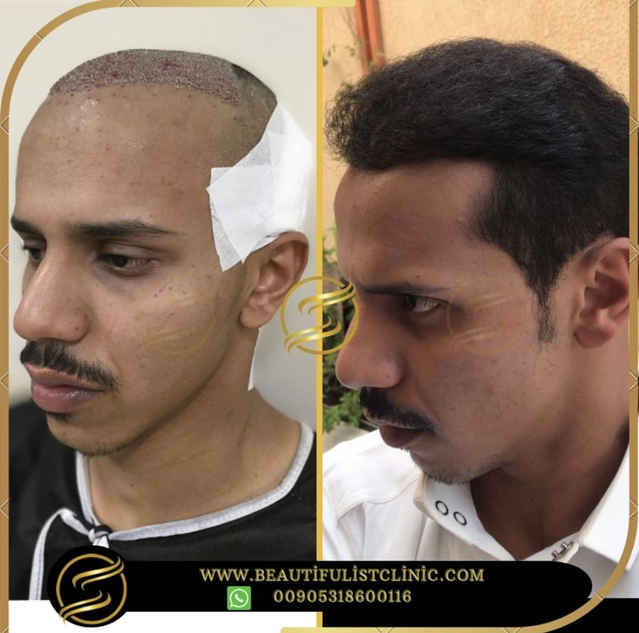
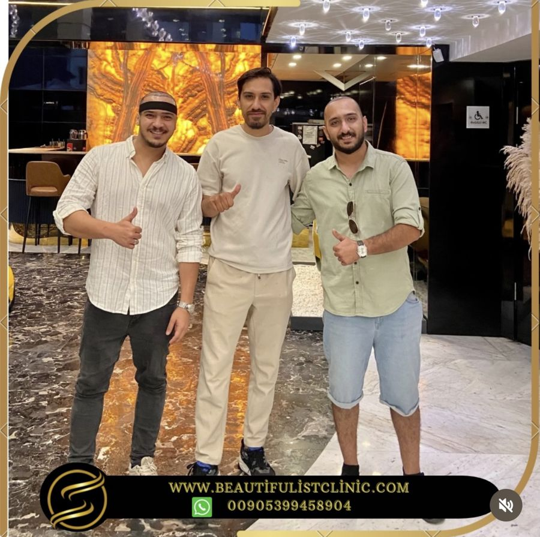
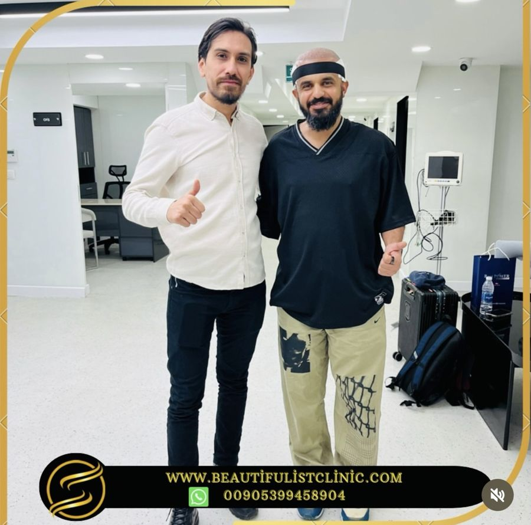

الفرق بين تقنية FUE بالسفير وتقنية DHI: أيهما الأنسب لك؟
مقارنة واضحة بين تقنية FUE بشفرات السفير وتقنية DHI بأقلام تشوي في زراعة الشعر: طريقة العمل، الكثافة، الحلاقة، فترة التعافي ولمن تناسب كل تقنية.
اقرأ المقال ←في Beautifulist Clinic نقدّم زراعة الشعر بتقنيتي FUE بالسفير وDHI، ضمن باقة شاملة تبدأ من استقبالك في المطار وتستمر حتى اكتمال نتيجتك — مع فريق يتحدث العربية ويرافقك في كل خطوة.
نختار التقنية حسب حالتك أنت، لا حسب قالب جاهز — لأن هدفنا نتيجة طبيعية تدوم.
صور حقيقية لضيوفنا في Beautifulist Clinic — نتائج طبيعية تدوم.







4 صور لرأسك عبر واتساب: أمام، أعلى، خلف، وجانب.
تقييم مجاني مع التقنية المقترحة وعدد البصيلات التقديري والسعر.
اختر التاريخ المناسب ونرتّب لك الاستقبال والإقامة.
3 أيام في إسطنبول، ثم متابعة مستمرة حتى اكتمال النتيجة.
نعمل وفق جميع التراخيص الرسمية في تركيا، وبمعايير تعقيم صارمة وأجهزة حديثة.
فريق يتحدث العربية يجيب عن أسئلتك قبل السفر ويرافقك خلال الإقامة وبعد العودة.
عرض مكتوب يشمل كل شيء منذ البداية، دون رسوم إضافية مفاجئة.
نرسم خط الشعر بما يتناسب مع ملامح وجهك وعمرك لنتيجة لا يلاحظها أحد.
من المطار إلى الفندق إلى العيادة، كل التفاصيل مرتبة لتركّز على راحتك فقط.
نتابع نمو شعرك عبر الصور والرسائل حتى تصل إلى النتيجة النهائية.
مقارنة واضحة بين تقنية FUE بشفرات السفير وتقنية DHI بأقلام تشوي في زراعة الشعر: طريقة العمل، الكثافة، الحلاقة، فترة التعافي ولمن تناسب كل تقنية.
اقرأ المقال ←ما الذي يحدد سعر زراعة الشعر في إسطنبول؟ دليل عملي للعوامل المؤثرة في التكلفة، وما يجب أن تتضمنه الباقة الشاملة، والأسئلة التي يجب طرحها قبل الحجز.
اقرأ المقال ←دليل عملي للعناية بعد زراعة الشعر: النوم، الغسيل، القشور، الرياضة، التساقط الصادم، ومتى تظهر النتيجة النهائية، مرحلة بمرحلة.
اقرأ المقال ←أرسل لنا 4 صور لرأسك (أمام، أعلى، خلف، جانب) عبر واتساب، ونرسل لك تقييماً وخطة واضحة خلال 24 ساعة.